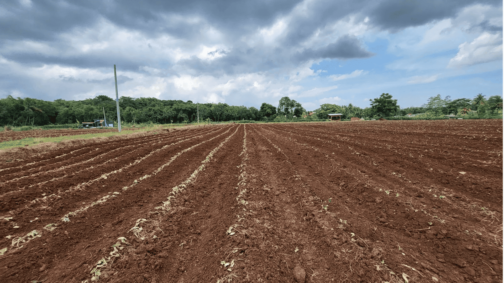

Lahan Setelah Diolah (Wide Shot)
Keterangan
Ambil shot yang menunjukkan bagian lahan yang sudah diolah secara luas dan utuh.
Catatan Detail
Wide shot lahan setelah diolah menunjukkan lahan secara luas yang telah diolah.